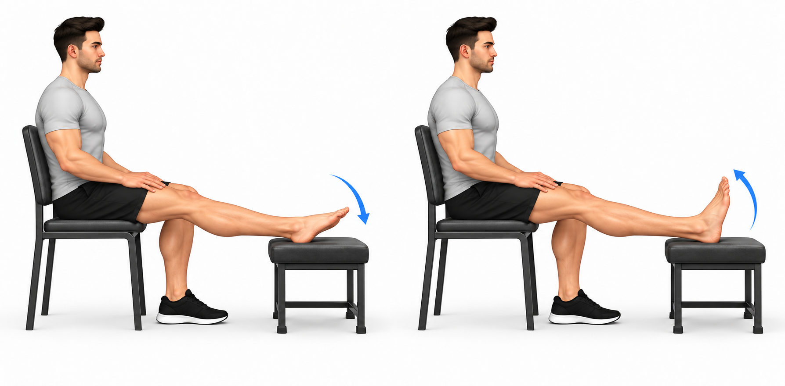
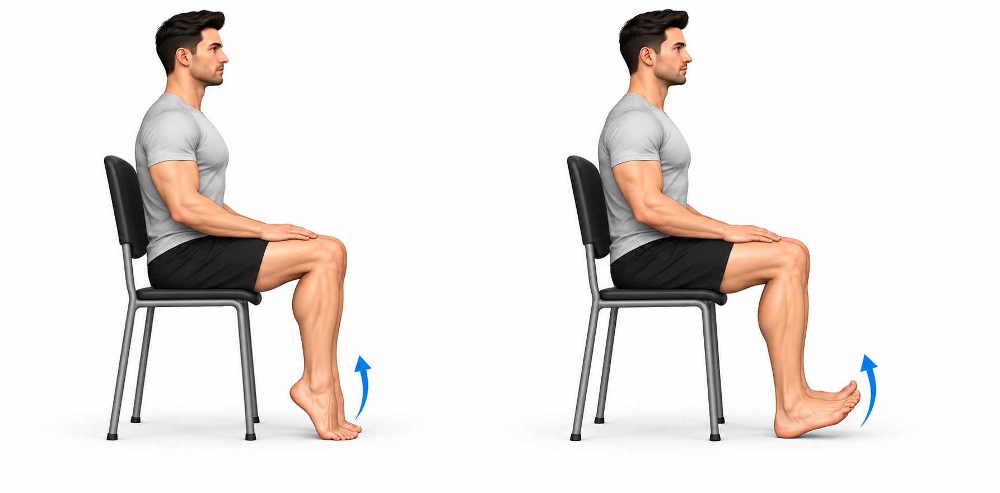
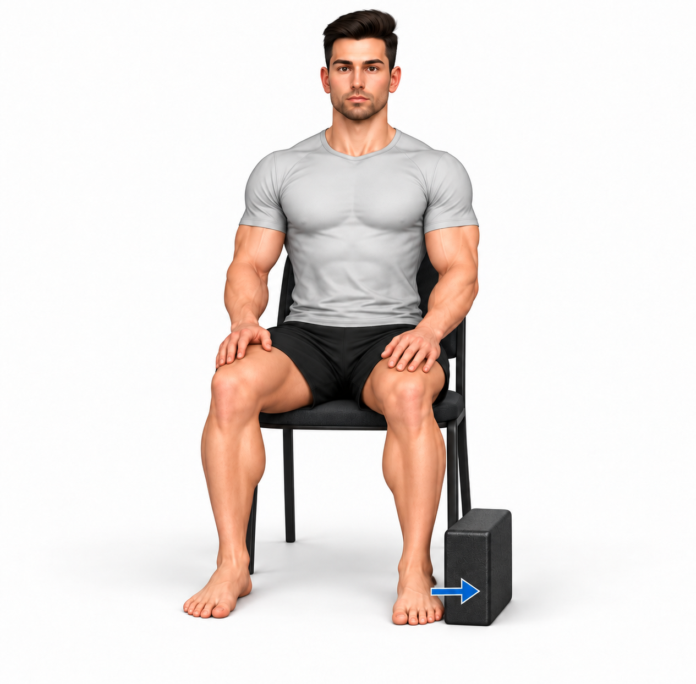
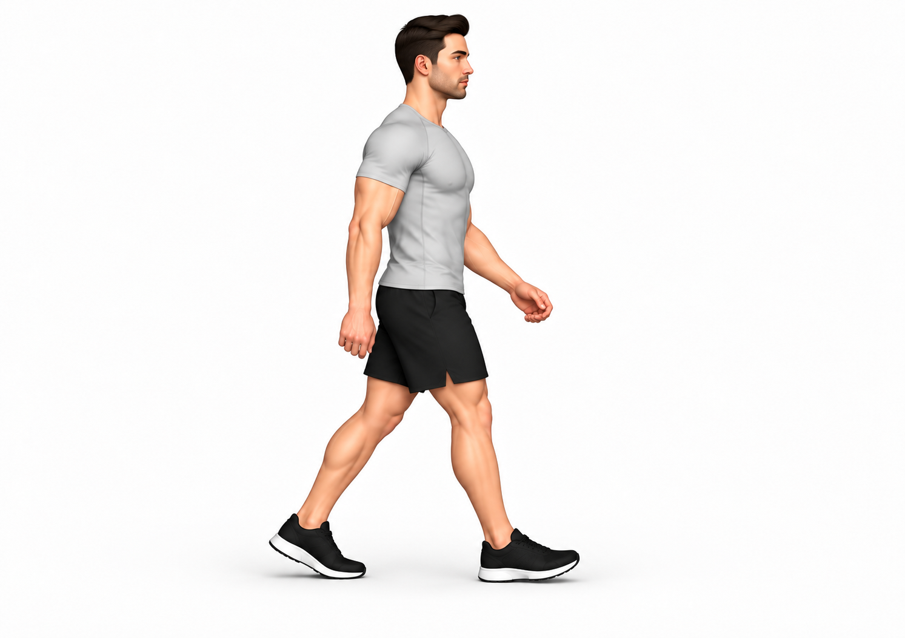

Progressão por critérios, sem semanas obrigatórias.
Precauções e recomendações
O seu plano
Este plano aplica-se apenas à seleção da sua equipa. Se lhe foi prescrita uma bota, imobilização ou restrição de apoio, respeite essa indicação. Não é obrigatório executar os seis exercícios.
Apoio e canadianas
Caminhe em percursos curtos, com o apoio autorizado. Use as canadianas se prescritas, para caminhar com controlo. Reduza-as conforme orientação; não force o apoio se lhe tiver sido indicado não apoiar.
Pé elástico ou tornozeleira
Use o suporte indicado, sobretudo ao caminhar. O pé elástico pode ajudar no conforto e no inchaço, mas não protege como uma tornozeleira estabilizadora. Retire a compressão elástica simples para dormir, salvo indicação diferente. Bota e ortótese têm instruções próprias.
Verificar a compressão
O suporte não deve provocar formigueiro, dormência, dedos frios ou mudança de cor. Se acontecer, retire a compressão e procure orientação. Se o pé continuar frio, pálido ou azulado, procure avaliação urgente.
Gelo, se aliviar
Se aliviar, aplique gelo durante 10–15 minutos, com uma toalha entre o gelo e a pele. Pode repetir ao longo do dia, deixando a pele recuperar. Não aplique diretamente nem adormeça com o gelo. Pare perante ardor, dor ou mudança marcada da cor. Se tiver alterações da sensibilidade, circulação ou intolerância ao frio, confirme primeiro com a equipa.
Elevação e movimento
Ao descansar, eleve confortavelmente a perna com almofadas. Alterne com movimentos suaves e deslocações curtas autorizadas. Evite longos períodos imóvel ou com o pé pendente. Evite calor intenso na zona inicialmente.
Massagem
Nos primeiros dois a três dias, evite massajar a zona lesionada, sobretudo se muito inchada ou com nódoa negra. Mais tarde, apenas se aconselhada, faça massagem superficial e confortável, sem pressionar a zona dolorosa. Não faça massagem profunda para desfazer edema ou nódoas negras. Não massaje a barriga da perna se surgir dor ou inchaço novo nessa região.
Frequência e resposta
Faça a mobilidade em períodos curtos ao longo do dia. A equipa ajusta a frequência dos restantes exercícios. Pode sentir desconforto ligeiro. Pare perante dor aguda, sensação de falha ou perda de controlo. Se começar a coxear mais, reduza ou interrompa. Se a dor, o inchaço ou a marcha estiverem claramente piores na manhã seguinte, reduza a sessão seguinte e peça ajuste.
Quando procurar ajuda
Procure avaliação urgente perante deformidade, pé frio/pálido/azulado, dormência persistente, dor intensa ou crescente, incapacidade de apoio não avaliada, febre com vermelhidão/calor importante ou dor e inchaço novos na barriga da perna. Se tiver falta de ar ou dor no peito, ligue 112.
Reavaliação
Peça reavaliação se deixar de melhorar, houver bloqueio, dor acima do tornozelo ou episódios repetidos de instabilidade. Correr, saltar e mudar rapidamente de direção exigem progressão e autorização próprias; terminar este plano não autoriza o regresso ao desporto.

Tornozelo para cima e para baixo
Sugestão: 1 × 10 repetições · repouso 30 s
posicao inicial
- Sentado ou deitado, apoie a perna e o calcanhar confortavelmente, deixando o pé livre para mexer.
execucao
- Mova lentamente o pé para cima e para baixo, sem forçar.
- Uma subida e descida completas contam como uma repetição.
pontos chave
- Não desenhe movimentos amplos para dentro nem force a ponta do pé.
- Faça apenas o lado, apoio, amplitude e dose prescritos.
erros comuns
- Usar impulso, forçar dor ou continuar após perder controlo.
dicas
- Respire normalmente. Peça ensino da técnica antes de treinar sozinho.
Dose inicial ajustável; confirmar lado, carga autorizada, amplitude, apoio e frequência. Fazer apenas a seleção prescrita. Reduzir se piorarem a dor, o inchaço ou a marcha na manhã seguinte; parar perante dor aguda ou sensação de falha.

Calcanhares e pontas dos pés sentado
Sugestão: 1 × 10 repetições · repouso 30 s
posicao inicial
- Sente-se numa cadeira firme, joelhos dobrados e pés apoiados.
execucao
- Levante os calcanhares mantendo a parte da frente dos pés no chão e volte a apoiar.
- Depois levante as pontas dos pés mantendo os calcanhares apoiados. O ciclo conta como uma repetição.
pontos chave
- Sem carga adicional e numa amplitude confortável.
- Faça apenas o lado, apoio, amplitude e dose prescritos.
erros comuns
- Usar impulso, forçar dor ou continuar após perder controlo.
dicas
- Respire normalmente. Peça ensino da técnica antes de treinar sozinho.
Dose inicial ajustável; confirmar lado, carga autorizada, amplitude, apoio e frequência. Fazer apenas a seleção prescrita. Reduzir se piorarem a dor, o inchaço ou a marcha na manhã seguinte; parar perante dor aguda ou sensação de falha.

Pressão suave do pé para fora — isométrico
Sugestão: 5 × 8 s · repouso 30 s
posicao inicial
- Sentado, pé apoiado e orientado à frente. Encoste a parte externa da frente do pé a um apoio acolchoado, fixo e estável, colocado conforme ensinado.
execucao
- Pressione suavemente para fora, sem deixar o pé ou a perna mexer.
- Mantenha durante o tempo prescrito e relaxe.
pontos chave
- Não use um objeto solto que possa deslizar. A pressão não deve provocar dor aguda ou fricção na pele.
- Faça apenas o lado, apoio, amplitude e dose prescritos.
erros comuns
- Usar impulso, forçar dor ou continuar após perder controlo.
dicas
- Respire normalmente. Peça ensino da técnica antes de treinar sozinho.
Dose inicial ajustável; confirmar lado, carga autorizada, amplitude, apoio e frequência. Fazer apenas a seleção prescrita. Reduzir se piorarem a dor, o inchaço ou a marcha na manhã seguinte; parar perante dor aguda ou sensação de falha.

Transferência de peso com apoio — tornozelo
Sugestão: 1 × 10 repetições · repouso 30 s
posicao inicial
- De pé diante de uma bancada firme, mãos apoiadas e ambos os pés no chão.
execucao
- Transfira ligeiramente o peso entre os dois pés, aproximando-o do lado lesionado apenas dentro do apoio autorizado.
- Regresse à distribuição inicial.
pontos chave
- Não levantar o outro pé nem inclinar o tornozelo. Não fazer se não estiver autorizado a apoiar.
- Faça apenas o lado, apoio, amplitude e dose prescritos.
erros comuns
- Usar impulso, forçar dor ou continuar após perder controlo.
dicas
- Respire normalmente. Peça ensino da técnica antes de treinar sozinho.
Dose inicial ajustável; confirmar lado, carga autorizada, amplitude, apoio e frequência. Fazer apenas a seleção prescrita. Reduzir se piorarem a dor, o inchaço ou a marcha na manhã seguinte; parar perante dor aguda ou sensação de falha.

Marcha em plano — recuperação do tornozelo
Sugestão: 1 × 120 s · repouso 60 s
posicao inicial
- Use piso plano, livre de obstáculos, calçado estável e os auxiliares prescritos.
execucao
- Caminhe devagar, com passos curtos e controlados. Use canadianas se prescritas.
- Pare para descansar antes de aumentar a claudicação.
pontos chave
- A imagem mostra a variante sem canadianas; use-as se indicadas.
- Só progrida tempo ou ritmo após tolerar a dose atual. Não é corrida.
- Faça apenas o lado, apoio, amplitude e dose prescritos.
erros comuns
- Usar impulso, forçar dor ou continuar após perder controlo.
dicas
- Respire normalmente. Peça ensino da técnica antes de treinar sozinho.
Dose inicial ajustável; confirmar lado, carga autorizada, amplitude, apoio e frequência. Fazer apenas a seleção prescrita. O tempo pode ser dividido em períodos menores. Usar canadianas/suporte se prescritos. A imagem sem auxiliares não altera essa indicação. Reduzir se piorarem a dor, o inchaço ou a marcha na manhã seguinte; parar perante dor aguda ou sensação de falha.

Ponte glútea — recuperação do tornozelo
Sugestão: 1 × 8 repetições · repouso 60 s
posicao inicial
- Deitado de costas, cabeça apoiada, joelhos dobrados e pés numa largura confortável.
execucao
- Eleve ligeiramente a bacia e volte a pousar devagar.
pontos chave
- Faça apenas se o apoio dos pés for autorizado e confortável. Não compense arqueando a lombar.
- Faça apenas o lado, apoio, amplitude e dose prescritos.
erros comuns
- Usar impulso, forçar dor ou continuar após perder controlo.
dicas
- Respire normalmente. Peça ensino da técnica antes de treinar sozinho.
Dose inicial ajustável; confirmar lado, carga autorizada, amplitude, apoio e frequência. Fazer apenas a seleção prescrita. Reduzir se piorarem a dor, o inchaço ou a marcha na manhã seguinte; parar perante dor aguda ou sensação de falha.